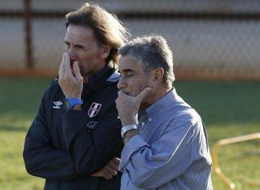

DESARROLLO DEPORTIVO
1
Ya estamos desarrollando un Proyecto Futbolístico Integrado.
- Creación de la dirección deportiva
- Unidad técnica de mayores
- Unidad técnica de menores


DIRECCIÓN DEPORTIVA
Hemos creado la Dirección Deportiva para que todo el proyecto futbolístico del Plan Centenario esté articulado hacia un mismo objetivo.
¿Qué se está trabajando?
- Diseñar y ejecutar la Estrategia Deportiva Nacional integrando los objetivos estratégicos de las categorías mayores, menores e infantiles.
- Generar las mejores condiciones para la participación de las selecciones nacionales de Perú en competencias internacionales.
- Implementar y supervisar el Plan de Menores FPF.
- Ser nexo oficial entre directivos y los comandos técnicos.
- Desarrollar estrategias de Fútbol Femenino, Futsal y Fútbol Playa.

DIRECTOR DEPORTIVO: JUAN CARLOS OBLITAS
NUEVA UNIDAD TÉCNICA DE MAYORES
¿Qué se está trabajando?
- Preparar a la Selección Mayor para las diferentes competencias internacionales.
- Crear una plataforma de alto nivel deportivo y profesional que permita la progresiva incorporación de jóvenes talentos que sean valiosos para la Selección Mayor.

DIRECTOR: RICARDO GARECA
EQUIPO TÉCNICO: XXXX
Patrocinadores Oficiales

Socios Oficiales


Proveedores y Licencias Oficiales